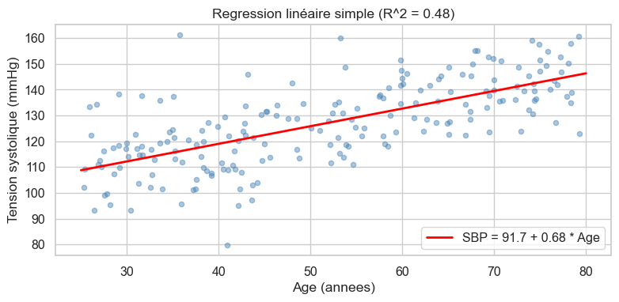
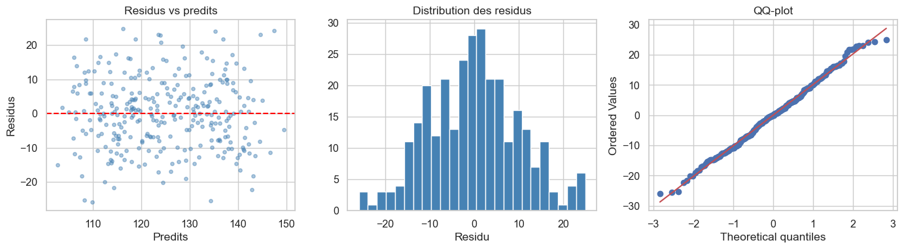
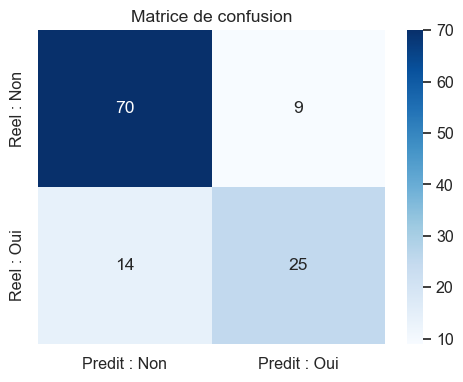

import numpy as np
import pandas as pd
import matplotlib.pyplot as plt
import seaborn as sns
from scipy import stats
import statsmodels.api as sm
from sklearn.linear_model import LogisticRegression
from sklearn.model_selection import train_test_split
from sklearn.metrics import classification_report, confusion_matrix
np.random.seed(42)
sns.set_theme(style="whitegrid", font_scale=1.05)
Analyse de Données avec Python pour Professionnels de la Santé
Module 5·Regression
Version condensee 6 heures · Module 5 sur 6 · Duree 60 minutes
Niveau intermediaireDuree 60 minPrerequis : Modules 1, 2, 4Colab compatible
OBJECTIFS DU MODULE
- Ajuster et interpréter une régression linéaire simple.
- Ajuster une régression linéaire multiple et lire coefficients, IC 95 %, p-values et R2 depuis statsmodels.
- Diagnostiquer un facteur de confusion en comparant estimations brute et ajustee.
- Verifier les hypothèses OLS (residus vs predits, QQ-plot).
- Ajuster une régression logistique sur une variable binaire et interpréter les coefficients comme des odds ratios.
- Evaluer un classifieur binaire avec matrice de confusion, sensibilité, spécificité, VPP, VPN.
JEU DE DONNÉES
Pima Indians Diabetes — 768 femmes de heritage Pima avec sept mesures de base. Outcome
Source : jbrownlee/Datasets — d’après UCI ML Repository.
outcome : 1 = diabète dans les 5 ans.Source : jbrownlee/Datasets — d’après UCI ML Repository.
0. Imports
Deux bibliothèques de régression sont utilisees ici :
statsmodels— sortie ‘a la stats classique’ (coefficients, p-values, IC). Convient pour l’inference.scikit-learn— sortie ‘a la ML’ (predictions, scores de performance). Convient pour la prediction.
Les deux peuvent se croiser, on prend le meilleur de chaque.
Syntaxe — import statsmodels + sklearn
import statsmodels.api as sm # convention : sm from sklearn.linear_model import LogisticRegression from sklearn.model_selection import train_test_split from sklearn.metrics import confusion_matrix, classification_report
1. Regression linéaire simple
\[y_i = \beta_0 + \beta_1 x_i + \varepsilon_i, \quad \varepsilon_i \sim \mathcal{N}(0, \sigma^2)\]
- \(\beta_1\) (pente) = changement attendu de \(y\) pour une augmentation de 1 unite de \(x\).
- \(\beta_0\) (ordonnee a l’origine) = espérance de \(y\) quand \(x = 0\). A interpréter avec prudence si 0 est en dehors des données.
Question. A quelle vitesse la tension systolique augmente-t-elle avec l’age ?
Syntaxe — régression simple avec scipy
res = stats.linregress(x, y) res.slope, res.intercept, res.rvalue, res.pvalue, res.stderr
# Simulation : vrai modèle SBP = 90 + 0.7*age + bruit
n = 200
age = np.random.uniform(25, 80, n) # uniforme entre 25 et 80
sbp = 90 + 0.7 * age + np.random.normal(0, 12, n) # bruit gaussien sigma=12
# Regression linéaire ordinaire
lr = stats.linregress(age, sbp)
print(f"Ordonnee a l'origine : {lr.intercept:.2f}")
print(f"Pente : {lr.slope:.2f} mmHg / année d'age")
# R^2 = pourcentage de variance de y expliquee par x
print(f"R-deux : {lr.rvalue ** 2:.3f}")
print(f"p-value : {lr.pvalue:.2e}")
# Visualisation : nuage + droite de régression
fig, ax = plt.subplots(figsize=(8, 4))
ax.scatter(age, sbp, alpha=0.45, color="steelblue", s=20)
# np.linspace(a, b, n) : n points uniformes entre a et b - pour tracer la droite
x_line = np.linspace(25, 80, 100)
ax.plot(x_line, lr.intercept + lr.slope * x_line, color="red", lw=2,
label=f"SBP = {lr.intercept:.1f} + {lr.slope:.2f} * Age")
ax.set_xlabel("Age (annees)")
ax.set_ylabel("Tension systolique (mmHg)")
ax.set_title(f"Regression linéaire simple (R^2 = {lr.rvalue**2:.2f})")
ax.legend()
plt.tight_layout(); plt.show()Ordonnee a l'origine : 91.69
Pente : 0.68 mmHg / année d'age
R-deux : 0.476
p-value : 1.37e-29
2. Regression linéaire multiple — sortie statsmodels
Ajouter plusieurs predicteurs :
\[y = \beta_0 + \beta_1 \cdot \text{age} + \beta_2 \cdot \text{IMC} + \beta_3 \cdot \text{tabagisme} + \varepsilon\]
Chaque coefficient = effet du predicteur a autres variables constantes — c’est le coeur de l’ajustement pour facteur de confusion.
Syntaxe — OLS statsmodels
X = sm.add_constant(df[["col1", "col2"]]) # ajoute une colonne 'const' = 1 modele = sm.OLS(y, X).fit() # ajustement modele.summary() # sortie complete modele.params # coefficients modele.pvalues # p-values modele.conf_int() # IC 95%
add_constantest obligatoire : sans elle l’ordonnee a l’origine est forcee a 0.
# Simulation : vrai modèle SBP = 70 + 0.6*age + 0.8*IMC + 5*tabac + bruit
n = 300
age = np.random.uniform(25, 80, n)
imc = np.random.normal(27, 5, n)
tabac = np.random.binomial(1, 0.25, n) # 25% de fumeurs (1=fumeur, 0=non)
sbp = 70 + 0.6 * age + 0.8 * imc + 5 * tabac + np.random.normal(0, 10, n)
# Construction de la matrice de design X
# D'abord le DataFrame des predicteurs, puis add_constant pour l'intercept
X = sm.add_constant(pd.DataFrame({"age": age, "imc": imc, "tabac": tabac}))
# OLS = Ordinary Least Squares ; .fit() ajuste le modèle
modele = sm.OLS(sbp, X).fit()
# Sortie classique de regression : R^2, F-stat, coefficients, IC, p-values
print(modele.summary()) OLS Regression Results
==============================================================================
Dep. Variable: y R-squared: 0.541
Model: OLS Adj. R-squared: 0.537
Method: Least Squares F-statistic: 116.4
Date: Mon, 08 Jun 2026 Prob (F-statistic): 8.39e-50
Time: 19:52:02 Log-Likelihood: -1118.8
No. Observations: 300 AIC: 2246.
Df Residuals: 296 BIC: 2260.
Df Model: 3
Covariance Type: nonrobust
==============================================================================
coef std err t P>|t| [0.025 0.975]
------------------------------------------------------------------------------
const 67.5188 3.838 17.594 0.000 59.966 75.071
age 0.6166 0.036 16.917 0.000 0.545 0.688
imc 0.8751 0.119 7.337 0.000 0.640 1.110
tabac 5.0439 1.338 3.770 0.000 2.411 7.677
==============================================================================
Omnibus: 0.880 Durbin-Watson: 2.002
Prob(Omnibus): 0.644 Jarque-Bera (JB): 0.978
Skew: 0.079 Prob(JB): 0.613
Kurtosis: 2.769 Cond. No. 397.
==============================================================================
Notes:
[1] Standard Errors assume that the covariance matrix of the errors is correctly specified.# Tableau coefficient compact (plus lisible que le summary complet)
tidy = pd.DataFrame({
"beta": modele.params, # estimations
"IC_lo": modele.conf_int()[0], # borne inférieure IC 95%
"IC_hi": modele.conf_int()[1], # borne supérieure IC 95%
"p": modele.pvalues, # p-values
}).round(3)
tidy| beta | IC_lo | IC_hi | p | |
|---|---|---|---|---|
| const | 67.519 | 59.966 | 75.071 | 0.0 |
| age | 0.617 | 0.545 | 0.688 | 0.0 |
| imc | 0.875 | 0.640 | 1.110 | 0.0 |
| tabac | 5.044 | 2.411 | 7.677 | 0.0 |
Lecture. “A age et tabagisme constants, chaque unite d’IMC est associee a une augmentation d’environ 0,8 mmHg de la tension systolique (IC 95 %…).”
3. Facteur de confusion — brute vs ajustée
Un facteur de confusion est associe a l’exposition ET a l’outcome, sans être sur le chemin causal entre les deux. Si on l’ignore, l’estimation brute est biaisee.
Demonstration : le cafe semble être un facteur de risque cardiovasculaire… parce que les fumeurs boivent plus de cafe et que le tabagisme cause la maladie.
Syntaxe — correlation simple
r, p = stats.pearsonr(x, y) # coefficient de Pearson + p-value
# Simulation d'un confondant : tabac influence cafe ET risque
n = 500
tabac = np.random.binomial(1, 0.3, n)
cafe = 1.5 + 2 * tabac + np.random.normal(0, 1.5, n) # fumeurs boivent + cafe
risque = 0.5 * tabac + np.random.normal(0, 0.3, n) # tabac cause maladie
# Note : cafe n'a PAS d'effet direct sur risque dans la simulation
# ---- Estimation BRUTE : correlation simple cafe-risque ----
r_brut, p_brut = stats.pearsonr(cafe, risque)
print(f"Brut cafe ~ risque : r = {r_brut:.3f}, p = {p_brut:.1e}")
# ---- Estimation AJUSTEE pour le tabagisme ----
X = sm.add_constant(pd.DataFrame({"cafe": cafe, "tabac": tabac}))
adj = sm.OLS(risque, X).fit()
print("\nCoefficients ajustes :")
# +.3f = format avec signe explicite + ou -
print(f" cafe : {adj.params['cafe']:+.3f} (p = {adj.pvalues['cafe']:.2f})")
print(f" tabac : {adj.params['tabac']:+.3f} (p = {adj.pvalues['tabac']:.1e})")
print(" -> L'effet apparent du cafe s'effondre après ajustement.")Brut cafe ~ risque : r = 0.300, p = 7.5e-12
Coefficients ajustes :
cafe : -0.012 (p = 0.18)
tabac : +0.522 (p = 1.0e-45)
-> L'effet apparent du cafe s'effondre après ajustement.4. Verification des hypothèses OLS
Quatre conditions :
- Linearite — relation linéaire (residus vs predits sans tendance).
- Independance des observations.
- Homoscedasticite — variance des residus constante (un nuage en entonnoir = mauvais signe).
- Normalite des residus — QQ-plot proche de la ligne.
Syntaxe — diagnostics
modele.resid # residus modele.fittedvalues # valeurs predites stats.probplot(residus, plot=ax) # QQ-plot vs loi normale
residus = modele.resid # erreurs observees - predites
predits = modele.fittedvalues # y predits
# 3 panneaux pour les 3 diagnostics visuels les plus utiles
fig, axes = plt.subplots(1, 3, figsize=(14, 4))
# Panneau 1 : residus vs predits - on cherche un nuage sans tendance
axes[0].scatter(predits, residus, alpha=0.45, s=15, color="steelblue")
axes[0].axhline(0, color="red", ls="--")
axes[0].set_xlabel("Predits"); axes[0].set_ylabel("Residus")
axes[0].set_title("Residus vs predits")
# Panneau 2 : distribution des residus - doit être approximativement normale
axes[1].hist(residus, bins=25, edgecolor="white", color="steelblue")
axes[1].set_xlabel("Residu"); axes[1].set_title("Distribution des residus")
# Panneau 3 : QQ-plot - points alignes sur la diagonale = normale
stats.probplot(residus, dist="norm", plot=axes[2])
axes[2].set_title("QQ-plot")
plt.tight_layout(); plt.show()
5. Regression logistique — outcome binaire
Quand l’outcome est oui/non, l’OLS predit des valeurs en dehors de \([0, 1]\) — non utilisable. La régression logistique modelise la probabilité :
\[\Pr(y = 1 \mid x) = \sigma(\beta_0 + \beta_1 x_1 + \ldots), \quad \sigma(z) = \frac{1}{1 + e^{-z}}\]
Les coefficients sont des log-odds. Pour des odds ratios : \(OR = e^{\beta}\).
Syntaxe — logistique statsmodels
X = sm.add_constant(df[predicteurs]) logit = sm.Logit(y, X).fit(disp=False) # disp=False : pas d'output d'iterations logit.summary() np.exp(logit.params) # odds ratios np.exp(logit.conf_int()) # IC des odds ratios
Application au jeu Pima Indians Diabetes.
import os
from pathlib import Path
import pandas as pd
# Chemins de cache candidats, dans l'ordre :
# 1. ./data/ (jupyter local, notebook a la racine)
# 2. ../data/ (jupyter local, notebook dans un sous-dossier)
# 3. ./ (au pire on cree un cache dans le cwd)
# En Colab, aucun n'existe : on tombe sur l'URL et on cree ./data/ pour les
# cellules suivantes.
_CANDIDATES = [Path("data"), Path("../data")]
DATA_DIR = next((p for p in _CANDIDATES if p.is_dir()), Path("data"))
DATA_DIR.mkdir(exist_ok=True)
def load_csv(name: str, url: str, **read_csv_kwargs) -> pd.DataFrame:
"""Charge un CSV : cache local d'abord, sinon URL publique.
Le cache utilise le meme separateur que la lecture (TSV reste TSV).
"""
for candidate_dir in _CANDIDATES:
local = candidate_dir / name
if local.exists():
return pd.read_csv(local, **read_csv_kwargs)
df = pd.read_csv(url, **read_csv_kwargs)
try:
sep = read_csv_kwargs.get("sep", ",")
(DATA_DIR / name).parent.mkdir(parents=True, exist_ok=True)
df.to_csv(DATA_DIR / name, index=False, sep=sep)
except OSError:
pass
return df
PIMA_URL = (
"https://raw.githubusercontent.com/jbrownlee/Datasets/master/"
"pima-indians-diabetes.data.csv"
)
# Le fichier n'a pas d'en-tête - on fournit les noms via 'names='
PIMA_COLS = ["pregnancies", "glucose", "blood_pressure",
"skin_thickness", "insulin", "bmi",
"diabetes_pedigree", "age", "outcome"]
pima = load_csv("pima_indians_diabetes.csv", PIMA_URL,
names=PIMA_COLS, header=None)
# Probleme connu du dataset : certaines mesures ont des 0 a la place de NaN.
# Une glycémie a 0 mg/dL est physiologiquement impossible -> NaN.
for col in ["glucose", "blood_pressure", "skin_thickness", "insulin", "bmi"]:
pima[col] = pima[col].replace(0, np.nan)
# Cas complets seulement (en pratique on imputerait)
pima_complete = pima.dropna().copy()
print(f"Dimensions (complet) : {pima_complete.shape}")
print(f"Prevalence diabete : {pima_complete['outcome'].mean():.1%}")
pima_complete.head()Dimensions (complet) : (392, 9)
Prevalence diabete : 33.2%| pregnancies | glucose | blood_pressure | skin_thickness | insulin | bmi | diabetes_pedigree | age | outcome | |
|---|---|---|---|---|---|---|---|---|---|
| 3 | 1 | 89.0 | 66.0 | 23.0 | 94.0 | 28.1 | 0.167 | 21 | 0 |
| 4 | 0 | 137.0 | 40.0 | 35.0 | 168.0 | 43.1 | 2.288 | 33 | 1 |
| 6 | 3 | 78.0 | 50.0 | 32.0 | 88.0 | 31.0 | 0.248 | 26 | 1 |
| 8 | 2 | 197.0 | 70.0 | 45.0 | 543.0 | 30.5 | 0.158 | 53 | 1 |
| 13 | 1 | 189.0 | 60.0 | 23.0 | 846.0 | 30.1 | 0.398 | 59 | 1 |
# Modele : diabète ~ age + IMC + glycémie
predicteurs = ["age", "bmi", "glucose"]
X = sm.add_constant(pima_complete[predicteurs])
y = pima_complete["outcome"]
# sm.Logit pour la régression logistique
# disp=False supprime les messages d'iteration
logit = sm.Logit(y, X).fit(disp=False)
print(logit.summary()) Logit Regression Results
==============================================================================
Dep. Variable: outcome No. Observations: 392
Model: Logit Df Residuals: 388
Method: MLE Df Model: 3
Date: Mon, 08 Jun 2026 Pseudo R-squ.: 0.2886
Time: 19:52:03 Log-Likelihood: -177.18
converged: True LL-Null: -249.05
Covariance Type: nonrobust LLR p-value: 5.925e-31
==============================================================================
coef std err z P>|z| [0.025 0.975]
------------------------------------------------------------------------------
const -9.6773 1.042 -9.288 0.000 -11.719 -7.635
age 0.0541 0.013 4.085 0.000 0.028 0.080
bmi 0.0779 0.020 3.870 0.000 0.038 0.117
glucose 0.0363 0.005 7.391 0.000 0.027 0.046
==============================================================================Odds ratios
Exponentialiser coefficients et bornes des IC.
Syntaxe — np.exp
np.exp(x) # e^x ; fonctionne sur scalaires et tableaux
# np.exp() applique element par element
or_tab = pd.DataFrame({
"OR": np.exp(logit.params),
"IC_lo": np.exp(logit.conf_int()[0]),
"IC_hi": np.exp(logit.conf_int()[1]),
"p": logit.pvalues,
}).round(3)
or_tab| OR | IC_lo | IC_hi | p | |
|---|---|---|---|---|
| const | 0.000 | 0.000 | 0.000 | 0.0 |
| age | 1.056 | 1.029 | 1.083 | 0.0 |
| bmi | 1.081 | 1.039 | 1.124 | 0.0 |
| glucose | 1.037 | 1.027 | 1.047 | 0.0 |
Lecture. “A age et IMC constants, chaque augmentation de 1 mg/dL de la glycémie multiplie les cotes de diabète par ~1,04.” Sur une plage de 30 mg/dL cela donne \(1{,}04^{30} \approx 3\) — une augmentation substantielle.
6. Evaluation — matrice de confusion et quatre taux
Syntaxe — train/test split sklearn
from sklearn.model_selection import train_test_split X_tr, X_te, y_tr, y_te = train_test_split( X, y, test_size=0.3, # 30% en test random_state=42, # reproductibilité stratify=y, # garde la même prévalence dans les 2 splits )
Stratifier est essentiel pour les outcomes deseuilibres : sans ca le jeu de test pourrait avoir 5% de positifs au lieu de 35%.
X = pima_complete[predicteurs]
y = pima_complete["outcome"]
# Split 70/30 stratifié
X_tr, X_te, y_tr, y_te = train_test_split(
X, y, test_size=0.3, random_state=42, stratify=y
)
# Ajustement avec sklearn (interface ML)
clf = LogisticRegression(max_iter=1000, random_state=42)
clf.fit(X_tr, y_tr)
# Predictions binaires (seuil par défaut : 0.5)
y_hat = clf.predict(X_te)
# Matrice de confusion :
# [[VN, FP],
# [FN, VP]]
cm = confusion_matrix(y_te, y_hat)
# .ravel() aplatit la matrice 2x2 en 4 valeurs (lecture lignes puis colonnes)
tn, fp, fn, tp = cm.ravel()
print("Matrice de confusion :")
print(cm)
print()
# classification_report donne les 4 métriques en un coup
print(classification_report(y_te, y_hat,
target_names=["Sans diabète", "Diabete"]))Matrice de confusion :
[[70 9]
[14 25]]
precision recall f1-score support
Sans diabète 0.83 0.89 0.86 79
Diabete 0.74 0.64 0.68 39
accuracy 0.81 118
macro avg 0.78 0.76 0.77 118
weighted avg 0.80 0.81 0.80 118
Sensibilite, spécificité, VPP, VPN
- Sensibilite (TPR) = VP / (VP + FN) — capacite a détecter les malades.
- Specificite (TNR) = VN / (VN + FP) — capacite a exclure les non-malades.
- VPP = VP / (VP + FP) — quand le test est positif, quelle proba d’être vraiment malade.
- VPN = VN / (VN + FN) — quand le test est negatif, quelle proba d’être vraiment sain.
# Les 4 métriques cliniques clés
sens = tp / (tp + fn)
spec = tn / (tn + fp)
vpp = tp / (tp + fp)
vpn = tn / (tn + fn)
print(f"Sensibilite (TPR) : {sens:.3f}")
print(f"Specificite (TNR) : {spec:.3f}")
print(f"VPP (precision) : {vpp:.3f}")
print(f"VPN : {vpn:.3f}")Sensibilite (TPR) : 0.641
Specificite (TNR) : 0.886
VPP (precision) : 0.735
VPN : 0.833# Visualisation : heatmap de la matrice de confusion
fig, ax = plt.subplots(figsize=(5, 4))
sns.heatmap(
cm, annot=True, fmt="d", # fmt='d' : format entier
cmap="Blues", ax=ax,
xticklabels=["Predit : Non", "Predit : Oui"],
yticklabels=["Reel : Non", "Reel : Oui"],
)
ax.set_title("Matrice de confusion")
plt.tight_layout(); plt.show()
7. Exercices (avec corriges)
Exercice 1 — Logistique avec glycémie seule
Quel est l’OR de la glycémie ?
# Votre essai ici# Solution
# Modele avec un seul predicteur : glucose
X = sm.add_constant(pima_complete[["glucose"]])
m = sm.Logit(pima_complete["outcome"], X).fit(disp=False)
# float() pour convertir Series 1 element -> nombre
or_g = float(np.exp(m.params["glucose"]))
ic = np.exp(m.conf_int().loc["glucose"])
print(f"OR par 1 mg/dL glycémie : {or_g:.3f} IC 95% [{ic[0]:.3f}, {ic[1]:.3f}]")OR par 1 mg/dL glycémie : 1.043 IC 95% [1.034, 1.053]Exercice 2 — Modele complet : age, IMC, glycémie, BP, pedigree
# Votre essai ici# Solution
feat = ["age", "bmi", "glucose", "blood_pressure", "diabetes_pedigree"]
X = sm.add_constant(pima_complete[feat])
m = sm.Logit(pima_complete["outcome"], X).fit(disp=False)
tbl = pd.DataFrame({
"OR": np.exp(m.params),
"IC_lo": np.exp(m.conf_int()[0]),
"IC_hi": np.exp(m.conf_int()[1]),
"p": m.pvalues,
}).round(3)
tbl| OR | IC_lo | IC_hi | p | |
|---|---|---|---|---|
| const | 0.000 | 0.000 | 0.000 | 0.000 |
| age | 1.055 | 1.026 | 1.084 | 0.000 |
| bmi | 1.078 | 1.034 | 1.123 | 0.000 |
| glucose | 1.037 | 1.027 | 1.047 | 0.000 |
| blood_pressure | 1.000 | 0.977 | 1.023 | 0.966 |
| diabetes_pedigree | 2.963 | 1.301 | 6.749 | 0.010 |
Exercice 3 — Seuil de classification
Calculer sensibilité et spécificité aux seuils 0,3 / 0,5 / 0,7.
Syntaxe — predict_proba
probs = clf.predict_proba(X_te) # matrice (n, 2) : proba_0, proba_1 probs[:, 1] # proba d'être positif (probs[:, 1] >= seuil).astype(int) # décision binaire au seuil donne
# Votre essai ici# Solution
# .predict_proba() : matrice avec une colonne par classe
# La 2eme colonne ([:, 1]) est la proba de la classe positive
probs = clf.predict_proba(X_te)[:, 1]
# Iterer sur plusieurs seuils
for seuil in (0.3, 0.5, 0.7):
# >= seuil renvoie un tableau de booleens, .astype(int) convertit en 0/1
yh = (probs >= seuil).astype(int)
tn, fp, fn, tp = confusion_matrix(y_te, yh).ravel()
print(f"seuil = {seuil:.1f} sens = {tp/(tp+fn):.2f} spec = {tn/(tn+fp):.2f}")seuil = 0.3 sens = 0.77 spec = 0.77
seuil = 0.5 sens = 0.64 spec = 0.89
seuil = 0.7 sens = 0.41 spec = 0.95Resume
Vous savez ajuster, interpréter et valider des modèles linéaire et logistique. Estimations ajustees, odds ratios avec IC, sensibilité et spécificité — c’est le vocabulaire que vous lisez dans le NEJM ou The Lancet.
Suite -> Module 6 : machine learning. Memes sorties binaires que la régression logistique, mais d’autres modeles.
Ressources et liens utiles
Documentation officielle
- statsmodels — Linear Regression — https://www.statsmodels.org/stable/regression.html
- statsmodels — Logistic Regression — https://www.statsmodels.org/stable/discretemod.html
- scikit-learn — Logistic Regression — https://scikit-learn.org/stable/modules/linear_model.html#logistic-régression
- scikit-learn — Model évaluation — https://scikit-learn.org/stable/modules/model_evaluation.html
Manuels de référence
- Harrell FE (2015) Regression Modeling Strategies. 2e ed., Springer — la bible de la régression en biostatistique.
- Vittinghoff et al. (2012) Regression Methods in Biostatistics. 2e ed., Springer.
- An Introduction to Statistical Learning (James, Witten, Hastie, Tibshirani) — version Python, libre en ligne : https://www.statlearning.com/
Confusion / confounding
- VanderWeele TJ (2019) Principles of Confounder Selection. European Journal of Epidemiology 34: 211-219.
- DAGitty (https://www.dagitty.net/) — outil web pour dessiner des DAGs causaux et identifier les confondants.
Jeu de données
- Pima Indians Diabetes Database — provient initialement de Smith et al. (1988), disponible via https://github.com/jbrownlee/Datasets et https://archive.ics.uci.edu/dataset/34/diabetes (UCI Machine Learning Repository).
Reporting
- TRIPOD Statement — https://www.tripod-statement.org/ : checklist pour le rapportage de modèles de prediction multivariables en santé.